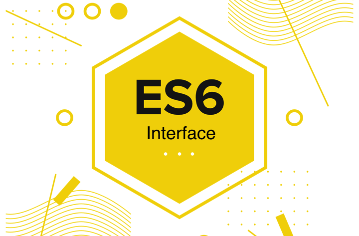

이 포스트는 GDG 2016에서 발표하신 맹기완 님의 발표를 듣고 감명을 받아 정리해본 글이다.
이터레이터 인터페이스와 이터러블 인터페이스는 다음 포스트에서 정리할 예정이다.
이 글을 읽고난 후에 (ES6) Symbol에 대한 글부터 읽어보길 바란다.
다소 짧아서 어디 공유하기 부끄럽지만 이렇게 짧은 내용들이 집중해서 읽기에 참 좋은 것 같다.
Interface
ECMAScript2015(이하 ES6) 들어서서 인터페이스는 고유 명사가 되었다.
고유명사(固有名詞)
낱낱의 특정한 사물이나 사람을 다른 것들과 구별하여 부르기 위하여 고유의 기호를 붙인 이름.
Java에서 Interface는 다음과 같은 명세를 준수해야 Interface라고 부른다.
자바 허접이라 다음 링크를 참조하였다.
JAVA 강좌 21편. 인터페이스(Interface)
Interface는 객체인가?
- 메소드는 public abstract로 선언된 추상 메소드만을 가진다.
- 변수는 public static final로 선언된 상수만을 가진다.
위 2가지 조건만 만족하면 자바에서는 인터페이스라고 불리운다.
나머지는 인터페이스의 특징인 것 같아 생략하였다. (다중 상속 등등)
자바에서 인터페이스는 고유 명사이며 위와 같은 의미를 가진다.
이와 같이 ES6에서도 이제 인터페이스는 자바와 같이 고유 명사가 되었다.
그 말은 ES6에서의 인터페이스는 다른 곳에서 쓰이는 인터페이스와는 다른 것이라는 걸 뜻한다.
아래 사이트를 가도 볼 수 있다.
http://www.ecma-international.org/ecma-262/6.0/#sec-iteration
그럼 ES6에서 말하는 인터페이스는 무엇인지 살펴보자.
- 객체가 가져야하는 키를 명시.
- 그 키가 가져야 하는 값을 명시.
위 조건만 만족하면 ES6에서는 인터페이스라고 불리울 수 있다.
인터페이스는 객체나 클래스가 아닌 하나의 명세라고 보면 될 것 같다.
그럼 test 인터페이스를 정의해보자.
안타깝게도 사용자 인터페이스를 정의할 방법은 없는 것 같지만,
설명을 위해 작성해보았다.
- test와 testing이라는 키를 가짐.
- test는 매개변수로 숫자를 받고 매개변수의 제곱한 결과를 반환함.
- testing은 boolean 값을 가짐.
하나만 하면 심심하니 test2라는 인터페이스도 정의해보자.
- name과 age라는 키를 가짐.
- name은 string 값을 가짐.
- age는 number 값을 가짐.
그럼 위 인터페이스를 충족하는 객체를 만들어보자.
obj 객체는
- test와 test2 인터페이스 조건을 충족하므로 test, test2 인터페이스를 따르는 객체이다.
- test 인터페이스의 조건을 충족하므로 test 인터페이스를 따르는 객체이다.
- test라는 키를 가지고 있다.
- test라는 키의 값은 숫자를 매개변수로 받고 매겨변수로 받은 숫자를 제곱해서 반환한다.
- testing이라는 키를 가지고 있다.
- testing이라는 키의 값은 boolean 값을 가진다.
- test라는 키를 가지고 있다.
- test2 인터페이스의 조건을 충족하므로 test2 인터페이스를 따르는 객체이다.
- name이라는 키를 가지고 있다.
- name이라는 키의 값은 string 값을 가진다.
- age라는 키를 가지고 있다.
- age라는 키의 값은 number 값을 가진다.
- name이라는 키를 가지고 있다.
- test 인터페이스의 조건을 충족하므로 test 인터페이스를 따르는 객체이다.
그 이외에 키에 관해서는 test와 test2 인터페이스에서 명세한 바가 없으므로 전혀 상관이 없다.
이는 마치 덕타이핑(duck typing)과 매우 유사한 것 같다.
덕 타이핑(duck typing)
오리처럼 생겨서 오리처럼 걷고 오리처럼 꽥꽥 소리를 낸다면 그건 오리다
라는 속담에서 유래됐다고 한다.
name, age 키가 있고 그 키에 맞는 값들을 가진다면 그건 test2 인터페이스를 따르는 것이다.
다른 어떠한 키가 오더라도 위 두개의 키만 조건을 준수한다면 test2 인터페이스를 따른다는 것이다.
좀 다른 건가…?
역시 남이 떠다 먹여주는 정보들만 받아 먹다보니 혼자서 탐구하는 것은 정말 어려운 것 같다.
뭐 여하튼 이렇듯 ES6에서는 사용자가 인터페이스를 정의할 수 없다보니
표준으로 정의해놓은 인터페이스가 있는데 그게 바로
이터러블 인터페이스와 이터레이터 인터페이스인데 길어서 인터페이스는 빼는 것 같다.
위 두 인터페이스 외에도 많은 것 같은데(사실 모른다.)
대표적인 두 인터페이스만 다음 포스트에서 다뤄야할 것 같다.